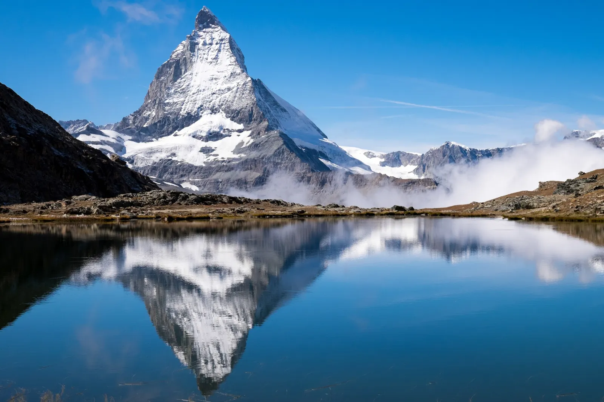
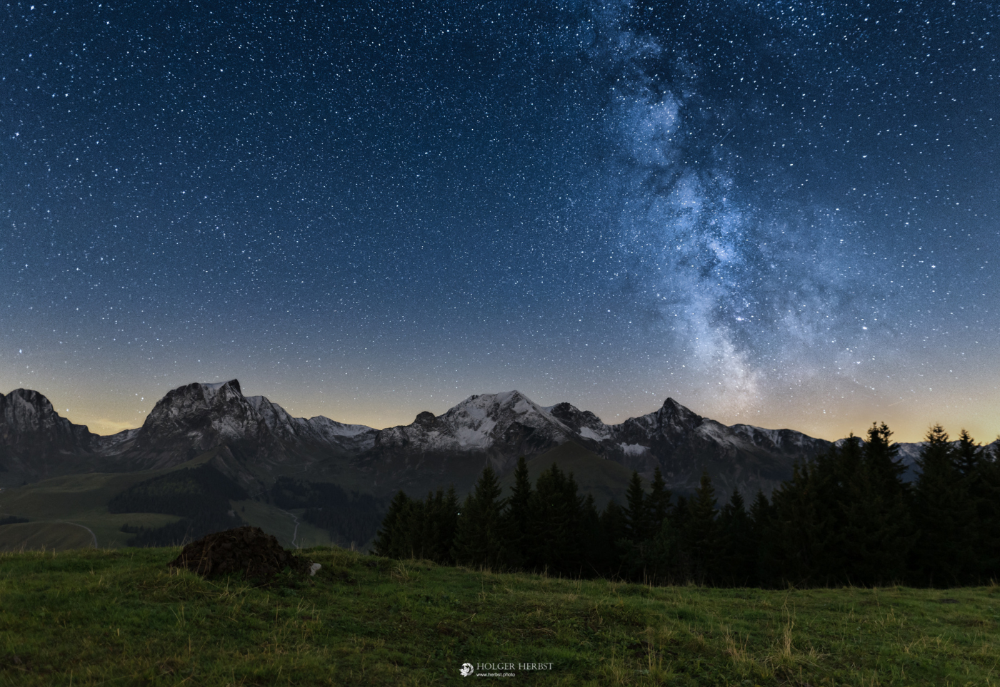

home
attractions
Top attractions in Switzerland feature stunning Alpine landscapes, historic cities, and scenic rail journeys, with iconic sites like the Matterhorn, Jungfraujoch, Rhine Falls, and Lucerne's Chapel Bridge
These areas in switzerland are often considered the most beautiful



- How to see them at their peak beauty.
- For most scenic outlooks in switzerland there is usually a train ride to get there if its very popular.
- however if it isnt that popular and you just want to go see views in some mountains they're going to be trails to get there.